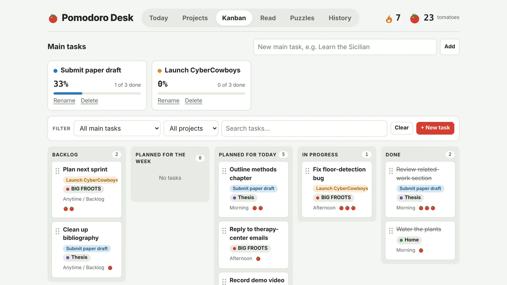
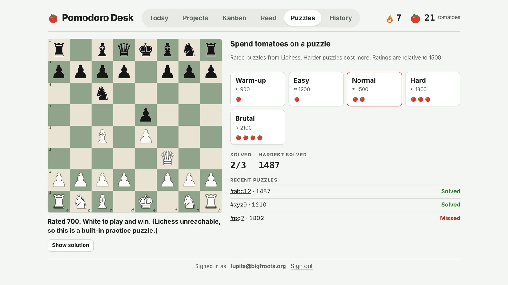
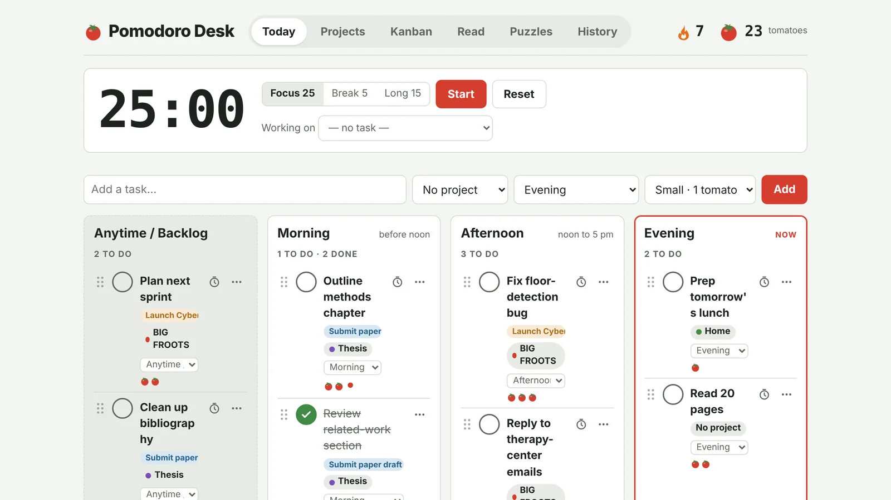
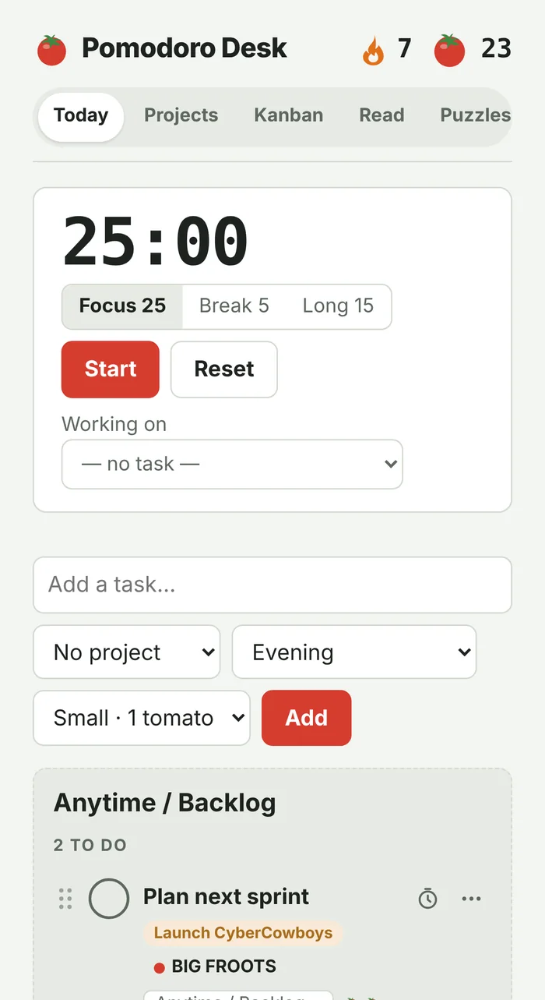
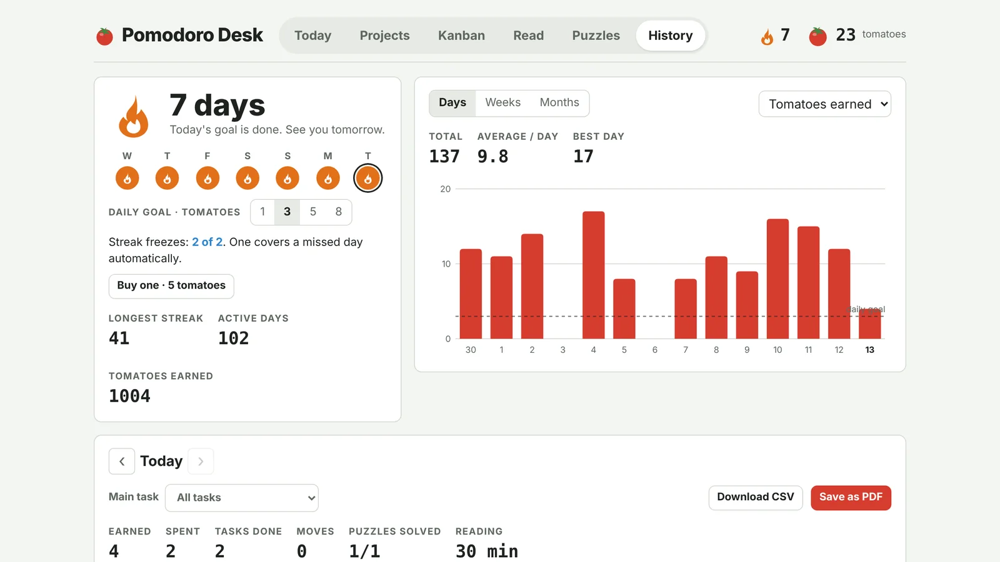
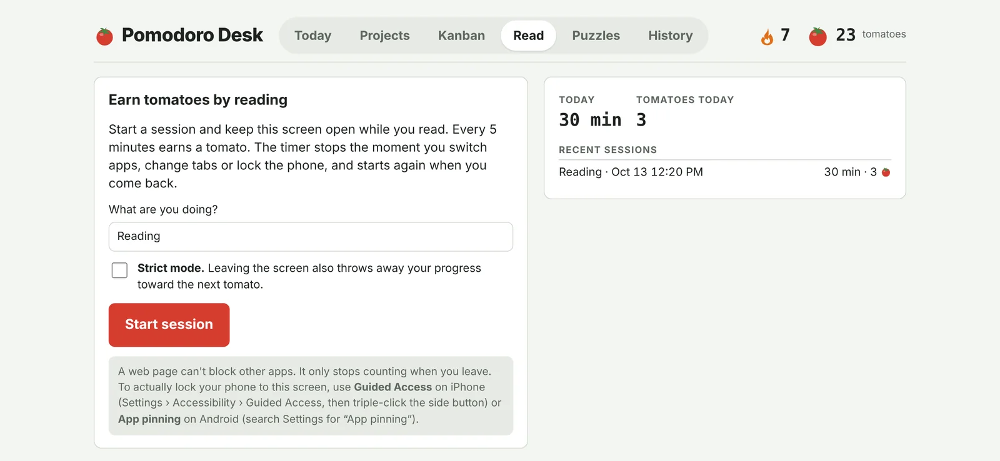

Focus first. Then a chess puzzle.
A to-do list, a focus timer and a reading tracker that pay you in tomatoes for finishing real work. Spend them on rated chess puzzles. The reward is a small, deliberate challenge for your brain, not another feed to scroll.

Most apps are built to keep you on them. Their rewards (likes, streaks, autoplay) pull you away from what you meant to do. We wanted the opposite: a desk companion that only rewards finishing things, and pays out in something that trains focus instead of breaking it.
In Pomodoro Desk the currency is a tomato, the original pomodoro. You earn tomatoes by checking off tasks and reading without switching away. You spend them on chess puzzles rated from warm-up to brutal. The harder the puzzle, the more tomatoes it costs, so a hard puzzle is something you've earned.

Puzzles tab. Rated puzzles come from Lichess. If Lichess can't be reached, a set of built-in practice puzzles is used instead.
Every tomato in your wallet stands for real work you finished.
Every new desk starts with 5 tomatoes and a few example tasks, so you can try the whole loop on day one.
Add tasks to Morning, Afternoon, Evening or Backlog. Tag each one with a project and a size.
Small · Medium · BigRun a 25-minute focus timer (with 5- and 15-minute breaks) and pin it to the task you're working on.
Sessions loggedCheck off a task to earn its size in tomatoes. Reading sessions earn one tomato for every 5 minutes on screen.
+1 to +3 per taskTrade tomatoes for a rated chess puzzle. Warm-up costs 1 tomato and Brutal costs 4.
−1 to −4 per puzzleThe Today tab puts the timer above four columns: Backlog, Morning, Afternoon and Evening. The current part of the day is highlighted, so you can see what's next without scrolling. Tasks can be dragged between columns and broken into subtasks.


Group tasks under a main goal, like "Submit paper draft", and watch its progress bar fill as tasks move from Backlog to Done on the Kanban board. History keeps your streak, daily totals and an itemized log of every day, which you can download as a CSV or PDF.

The reading timer pauses the moment you switch apps, change tabs or lock your phone. Strict mode also throws away your progress toward the next tomato.
Choose a daily goal of 1, 3, 5 or 8 tomatoes. Keep up to two freezes, and one covers a missed day automatically, so a sick day doesn't erase weeks of progress.
Tomatoes are counted on the server. Once you've spent a task's tomatoes you can't uncheck it, so you can't check it off again for free tomatoes.
Streaks and daily totals follow your local day, not the server's clock.

Read tab. It also explains how to use Guided Access on iPhone or App pinning on Android to lock the phone to the screen.
Sign in once and the same desk opens on your phone, your laptop, or a Raspberry Pi touchscreen running full screen next to your keyboard.
A single-page app in plain HTML, CSS and JavaScript, with chess.js for the puzzle board. Large touch targets work well on a Pi touchscreen.
Node.js and Fastify on Fly.io. It checks every login and applies each change in a single database transaction.
Postgres, with sign-in through Supabase Auth by password or emailed link. The data is kept out of Supabase's public API.
Changes wait in a queue on the device and sync when you're back online. Retries never count twice.
Small tasks, visible rewards right away, and a schedule split into parts of the day lower the cost of getting started.
Reading sessions and big goals like a thesis chapter turn long projects into progress you can count.
Rated puzzles every day, tied to real work. It's practice you've earned.
Run it full screen on a Raspberry Pi as a dedicated focus display beside your monitor.
Make an account, plan today, and finish one task. Your first chess puzzle is already paid for.